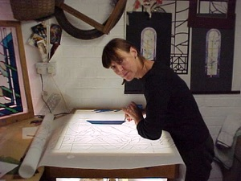

Welcome to Sue’s Site

The purpose of this website is to share Sue’s experience, skills, resources, ideas, images, enthusiasm and that of her students for stained glass design and making.
In addition there are images of the work that Sue completed with students in schools using mosaics, print, ceramics drawing and painting.
Hopefully the resources and images made available here will provide enjoyment and support for both teachers and students in the development of their own skills and ideas and continue the legacy of Sue’s work inspiring students to produce what is best and finest.
Images are free to download and hopefully Sue’s work will continue to inspire both teachers and learners.
If you would like to show your appreciation of any of the free resources available a small gift to the Worthing Heart Fund can be made by sending a cheque made payable to the Worthing Heart Fund, c/o Dr Kathy Webb-Peploe, Consultant Cardiologist at Worthing Hospital, Lyndhurst Rd, Worthing, West Sussex, BN11 2DH.
.If you have any queries regarding the site please contact me mervynwallis@googlemail.com
Enjoy
SUE WALLIS
Artist in Architectural Stained Glass
(26th July 1951 -December 8th 2011)

